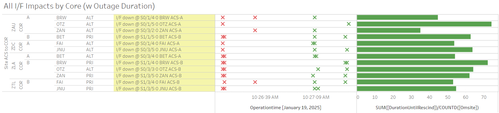

Weekly Highlights 20250115-20250122
SSM-WAAS-064 - DFO2-R1 GUS Receiver Upgrade
- 1/15 22:53 - SSM-WAAS-064 - GUS Switchover-S15 - CM1 verified to Primary mode following RF Tuning Procedure
- 1/15 23:15 - GUS Switchover-S15 - BR1 to Primary / CM1 to Backup due to comms disconnected temporarily to CM1 GUS during comm troubleshooting; CM1 returned to Backup at 1/15 23:26
- 1/15 23:32 - GUS Switchover-S15 - BR1 to Backup / CM1 to Primary to continue monitoring in Primary Mode
- 1/16 19:39 - SSM-WAAS-064 - CM1
DC3 Unexpected State SE cleared by configuring
the DC3 to ON; however, after reviewing SSM, the
DC3 Unexpected State SE is actually expected --
the O&Ms will not rescind those DC3 SEs
until they are upgraded at the end of
SSM-WAAS-064 to W7.425L build
- 1/16 20:59 - CM1 DC3 Unexpected State SE restored in line with SSM
- 1/16 19:56 - CM1 Ring 1 ALT / Ring 2 PRI lines
cleared --
currently connected to the front of the FTI patch panel, so the solution is not permanent, but we could bring a punch down tool next time - 1/16 20:43 - CM1 Tap Tool ports flipped DOWN/UP momentarily
| Task(s) | DATES | EXPECTED DURATION |
|---|---|---|
| Cutover O&Ms – W7.412L | 12/03 – 12/03 | 1 day |
| Cutover BR1 – W7.425L | 12/03 – 12/06 | 3 days |
| Cutover BR2 – W7.425L | 12/10 – 12/12 | 3 days |
| Cutover AP1 – W7.425L | 12/17 – 12/19 | 3 days |
| New Year --- 2025 | ||
| Cutover CM1 – W7.425L | 1/14 – 1/16 | 3 days |
| Cutover DX1 – W7.425L | 1/28 – 1/30 | 3 days |
| Cutover SZ1 – W7.425L | 2/04 – 2/06 | 3 days |
| Cutover O&Ms – W7.425 | 2/07 – 2/07 | 1 day |
| 2 Week Post Cutover Monitoring Period | 2/07 – 2/21 | 14 days |
- 12/2 08:00 - GUS Switchover - S15 - CM1 to Primary / BR1 to Backup in preparation for SSM-WAAS-064 Cutover start
- 12/3 16:04 - SSM-WAAS-064 - POC O&M to Maintenance for Upgrade to W7.412L; restored to Normal at 12/3 16:51
- 12/3 16:54 - SSM-WAAS-064 - NOC O&M to Maintenance for Upgrade to W7.412L; restored to Normal at 12/3 17:34
- 12/3 17:42 - SSM-WAAS-064 - BR1 GUS to Maintenance for Upgrade to W7.420L...
- 12/5 00:17 - SSM-WAAS-064 - BR1 returns to Maintenance and TLT Verification performed; RF Tuning still to be performed...
- 12/5 18:47 - SSM-WAAS-064 - BR1 returns to Maintenance for TLT Verification and final RF Tuning steps
- 12/6 01:45 -
SSM-WAAS-064
-
GUS Switchover -
S15 - BR1
verified to Primary mode
- 12/6 05:45 - GUS Switchover - S15 - BR1 Faulted from Primary with SE 44 L1 GEO Downlink Msg Check Fault...
- 12/6 06:47 - BR1 Faulted during Verification with SE 45 L5 GEO Downlink Msg Check Fault due to exceeding time in Verification mode
- 12/6 07:29 - BR1 restored to Backup; ~44 seconds after entering Backup mode, received SE 50 L5@L2 Gen Lpbck Check Fault which has not rescinded...
- 12/6 18:11 - GUS
Switchover -
S15
- CM1 to Backup / BR1 to
Primary to test and
troubleshoot downlink
- 12/6 19:01 - GUS Switchover - S15 - BR1 to Backup / CM1 to Primary; after mode change to Primary, BR1 began alerting with SE 47 L1@L2 Gen Lpbck Msg Check Fault and received SE 46 L1 Test Trans Msg Check Fault
- 12/6 19:20 - BR1 GUS Faulted with Receiver SEs
- 12/6 19:58 -
Verified BR1
GUS to
Backup then
immediately
received SE
50 L5@L2 Gen
Lpbck Check
Fault;
planning to
replace
GUS-D
Receiver...
- CR:
What prompted the receiver swap was parity errors on the L1 and L5 geo messages
- CR:
- 12/6 21:25 - BR1 GUS Verified to Backup after replacing GUS-D Receiver
- 12/6 21:51 -
GUS
Switchover
-
S15
- CM1 to
Backup /
BR1 to
Primary;
received
non-critical
SEs 46 L1
Test Trans
Msg Check
Fault and 50
L5_L2 Gen
Lpbck Check
Fault
- CR:
SEs are due to the false doppler for the internal loopback signals
- CR:
- 12/10 16:50 - SSM-WAAS-064 - BR2 to Maintenance for Upgrade; devices installed and configured and restored in Maintenance at 12/11 02:51; ready for RF Tuning...
- 12/11 23:43 - SSM-WAAS-064 - GUS Switchover - G30 - AP1 to Backup / BR2 to Primary to complete the RF Tuning and finish upgrade
- 12/17 16:57 - SSM-WAAS-064 - AP1 GUS to Maintenance for Upgrade to W7.425L; hanging in Startup at 12/18 02:02...
- 12/18 19:46 - SSM-WAAS-064 - AP1 GUS restored to Maintenance Mode for RF Tuning Procedure...
- 12/19 00:46 - SSM-WAAS-064 - GUS Switchover - G30 - BR2 to Backup / AP1 to Primary to complete RF Tunining; AP1 upgrade complete
Xmas Moratorium from December 21, 2024 at 0000Z through January 6, 2025 at 0800Z
- 1/14 17:25 - SSM-WAAS-064 - CM1 GUS to Maintenance for upgrade; restored to Maintenance at 1/15 00:32; RF Tuning still to be performed...
1/15-1/22 Bias Alerts
- 1/15 02:12 - MSD L1/L2 Bias Alert
- 1/15 07:16 - MMD L1/L2 Bias Alert
- 1/16 11:05 - MTP WRE Bias Alert
- 1/16 15:54 - MTP WRE-C to Maintenance and Restart Subsystem to clear BAD thread status; restored to Normal at 1/16 16:17
- 1/16 16:18 - MTP WRE-A to Maintenance and Restart Subsystem to clear BAD thread status; restored to Normal at 1/16 16:44
- 1/18 10:56 - MTP WRE Bias Alert -- PID WRS Down
- 1/18 11:16 - MTP WRE-A Restarted; restored to Normal at 1/18 11:37
- 1/18 11:39 - MTP WRE-C Restarted; restored to Normal at 1/18 11:59
- 1/17 06:05 - YFB L1/L2 Bias Alert
- 1/17 08:45 - YYR L1/L2 Bias Alert
- 1/17 13:02 - MSD L1/L2 Bias Alert
- 1/18 14:22 - MPR / MSD L1/L2 Bias Alert
- 1/18 18:29 - MTP L1/L2 Bias Alert
- 1/19 10:52 - MTP WRE Bias Alert -- PID WRS Down
- 1/19 11:03 - MTP WRE-A Restarted; restored to Normal at 1/19 11:21
- 1/19 11:23 - MTP WRE-C Restarted; restored to Normal at 1/19 11:41
- 1/19 21:44 - MTP L1/L2 Bias Alert
- 1/20 10:49 - MTP WRE Bias Alert -- PID WRS Down
- 1/20 10:57 - MTP WRE-A Restarted; restored to Normal at 1/20 11:21
- 1/20 11:22 - MTP WRE-C Restarted; restored to Normal at 1/20 11:42
- 1/20 11:42 - MTP L1/L2 Bias Alert
- 1/20 19:53 - MPR / MSD L1/L2 Bias Alert
- 1/20 23:56 - OTZ L1/L2 Bias Alert
- 1/21 02:28 - MPR / MTP L1/L2 Bias Alert
- 1/21 03:32 - MSD L1/L2 Bias Alert
- 1/21 10:42 - MTP WRE Bias Alert -- PID WRS Down (ZLA / ZTL Only)
1/16 - MMX Ethernet Transition Attempted
- 1/16 15:49 - MMX Ring 1 Serial disconnected at ZTL COR-A to attempt Ethernet migration -- Failed to transition to Ethernet; Serial reconnected at 1/16 18:31 (~2h 40m)
1/17 - MMD WRE-A in Maintenance
- 1/17 00:01 - MMD WRE-A returns to Maintenance and inits did not fail -- error logs copied...
1/17 - MR-189080 Comm Impacts
- 1/17 05:14 - Multiple comms impacted by
MR-189080 - L3Harris transition PRIMARY ckts from ONS C15310 to Fujitsu FW4100.- 1/17 08:08 - YYR Ring 1 / YFB Ring 1 comms down hard; lines cleared at 1/17 14:12 (~21854 seconds)

1/18 - MTP WRE-B Flapping in Maintenance
- 1/18 00:46 - MTP WRE-B spontaneously returned to Maintenance with SE 309 Processor Power / Fan Failure; cannot hold Maintenance Mode, but there are no init failure sig events; ref LIR 898330924...
- 1/21 11:12 - MTP WRE-B inits started failing; still receiving SE 309 and can't hold Maintenance Mode...
1/21 - AP1 GUS Fault + Switchover
- 1/21 00:40 - AP1 GUS Faulted from Backup with SE 142 RFU Equip Downlink and 202 L5 LNA Control Failure; Control Powered and restored to Backup at 1/21 01:34
- 1/21 01:47 - GUS Switchover - G30
- BR2 to Backup / AP1 to Primary;
APC was mistakenly placed into primary and left in primary.-- ref LIR 927160324
1/21 - ZHU WRE-C Faults
- 1/21 18:45 - ZHU WRE-C Faulted with SEs 52,53,59 indicating Freq Std -- Alarm Code F3 Ionizer Filament out of tolerance; Control Power cleared the alarm code and restored to Normal at 1/21 19:46
- 1/22 14:16 - ZHU WRE-C Faulted with SEs 53,59 indicating Freq Std -- Alarm Code F3 Ionizer Filament out of tolerance; no Restart or Control Power -- did not clear alarm code, restored to Normal at 1/22 14:25
- 1/22 15:05 - ZHU WRE-C to Maintenance for Control Power to cleare alarm code F3; restored to Normal at 1/22 15:33
1/22 - SZ1 Intrusive Maintenance (C5 KPA Cleaning)
- 1/22 15:51 - SZ1 GUS to Maintenance for
Intrusive maintenance to perform KPA Cleaning & the faulted C5 KPA Maintenance-- ref LIR 109094021; Control Powered then Faulted in Verification due to Operator waiting too long; Control Powered and restored to Backup...
Various Comm Impacts
* Only captures major / long-term comm outages
Mexico Comms
- 1/15 06:28 - MTP Ring 1 comms down hard; line cleared at 1/15 07:16 (~50m)
- 1/16 23:46 - MTP Ring 1 comms down hard; line cleared at 1/17 14:59 (~15h 13m)
- 1/19 15:16 - MX Ring 1 comms down hard except MMD; all lines cleared at 1/19 18:36 (~3h 19m)
- 1/22 04:16 - MTP Ring 1 comms down hard; line cleared at 1/22 14:59 (~10h 43m)
- 1/22 15:46 - MTP Ring 1 comms down hard...
OTZ Comms
- 1/17 00:11 - OTZ Ring 1 ALT / Ring 2 ALT comms
flapping
- 1/17 08:38 - OTZ Ring 2 ALT comms cleared (~1477 seconds total)
- 1/17 09:28 - OTZ Ring 1 ALT comms cleared (~8956 seconds total)
- 1/17 17:10 - OTZ Ring 1 PRI / ALT + Ring 2 ALT comms down hard; all lines cleared at 1/17 17:13 (~148 seconds)
- 1/17 17:24 - OTZ Ring 1 ALT / Ring 2 ALT comms down hard; lines cleared at 1/17 17:26 (~120 seconds)
- 1/17 19:32 - OTZ Ring 1 ALT / Ring 2 ALT comms
flapping
- OTZ Ring 2 ALT comms cleared at 1/18 08:24 (~17805 seconds total)
- OTZ Ring 1 ALT comms cleared at 1/18 10:09 (~20302 seconds total)
- 1/18 15:08 - OTZ Ring 1 ALT comms flapping; last event cleared at 1/18 16:31 (~386 seconds total)
- 1/18 19:55 - OTZ Ring 1 ALT comms flapping; line cleared at 1/19 07:44 (~9722 seconds total)
- 1/18 22:35 - OTZ Ring 2 ALT comms flapping; line cleared at 1/19 06:18 (~2203 seconds total)
- 1/20 07:57 - OTZ Ring 1 ALT / Ring 2 ALT comms down hard; both lines cleared at 1/20 08:00 (~206 seconds)
- 1/20 20:47 - OTZ Ring 1 ALT comms flapping; last event cleared at 1/21 06:43 (~17250 seconds total)
- 1/20 22:19 - OTZ Ring 2 ALT comms flapping; last event cleared at 1/21 02:43 (~2535 seconds total)
Other Sites
- 1/16 14:47 - YFB Ring 2 comms looped; loop cleared at 1/16 16:47 (~6000 seconds)
- 1/19 04:50 - Multiple COR-COR impacts between ZLA and ZAU; lines cleared after ~1 min

- 1/19 10:26 - Multiple Alaska comms impacted; lines cleared after ~1min

- 1/22 10:06 - Multiple Alaska comms impacted; lines cleared after ~1min

- 1/22 15:55 - YQX Ring 1 comms down hard; line cleared at 1/22 20:31 (~4h 36m)
Mexico Ring 2 Down Hard...
- 12/18 17:26 - MMX Ring 2 down hard...
- 12/6 17:27 - MMD Ring 2 comms down hard...
- MSD mostly Down with short (~1m) flips to Up, but down hard since 12/23 02:38...
OTZ Ring 2 PRI / ALT
- 9/18 23:57 - OTZ Ring 1 ALT comms
connected after circuit validation
- Currently the wrong circuit (*508) is being used for OTZ Ring 2 ALT and *509 is connected on OTZ Ring 2 PRI
- FTI is troubleshooting the *509 circuit -- ref LIR 69611621
- Intial alarm light on DNX1U has cleared as of 10/1; further troubleshooting from FTI has not resolved issue...
- FTI has tested and re-terminated at ZLA. FTI needs a technician dispatched to OTZ to reset some equipment. Date has not been determined.
List of current offline WREs
List of current offline WREs -- ref WAAS Status Monitor
All Depot shipments to Mexico are halted until the customs process can be finalized
- MMD WRE-A - 12/20/24-... - Freq Std failed -- ref LIR 913745524
- MTP WRE-B - 11/18/24-... - Receiver inits failing -- ref LIR 898330924
- MMX WRE-A - 10/13/24-... - Freq Std failed -- ref LAD 879853824
- MMX WRE-C - 5/15/24-... - Processor failed and could not be restored -- ref LIR 798352224
- MPR WRE-B - 5/3/24-... - Inits failing -- looks like a bad freq std; due to shipping issues, there is no spare Freq Std and no ETA to recover WRE-B... -- ref LIR 44170821
5/11/23-11/20/24 - MX Ring 2 Satcom Upgrade
- 5/11/23 17:01 - MX Ring 2 SatCom upgrade begins; MX Ring 2 OFFLINE until upgrade troubleshooting is complete
All sites are currently connected through Tijuana with new cables; but still large UDP data packets (WAAS Multicast) being dropped on Ring 2 -- no further actions to take at Tijuana
-
MMX / MMD are only sites with Ring 2 comm
-
MTP / MMD / MSD had comm issues to Tijuana prior to satcom failure...
-
WAAS Second Level assessing situation before further troubleshooting...

Major Events


Core I/F Status

Comm Events

Mexico Comm Status